All code is ready to go for R. To use the color palettes
for displaying purposes in Javascript (GEE) or
Python, simply copy-paste the lists beneath the example
images.
library(RColorBrewer)
library(viridis)
library(wesanderson)
library(tidyverse)
library(cartography)
heatmap$value <- scale(heatmap$value)
plot <- function(pal){
ggplot(heatmap, aes(x = X2, y = X1, fill = value)) +
geom_tile() +
scale_fill_gradientn(colours = pal) +
scale_x_discrete(expand = c(0, 0)) +
scale_y_discrete(expand = c(0, 0)) +
coord_equal()
}spectral <- brewer.pal(9, "Spectral")
plot(spectral)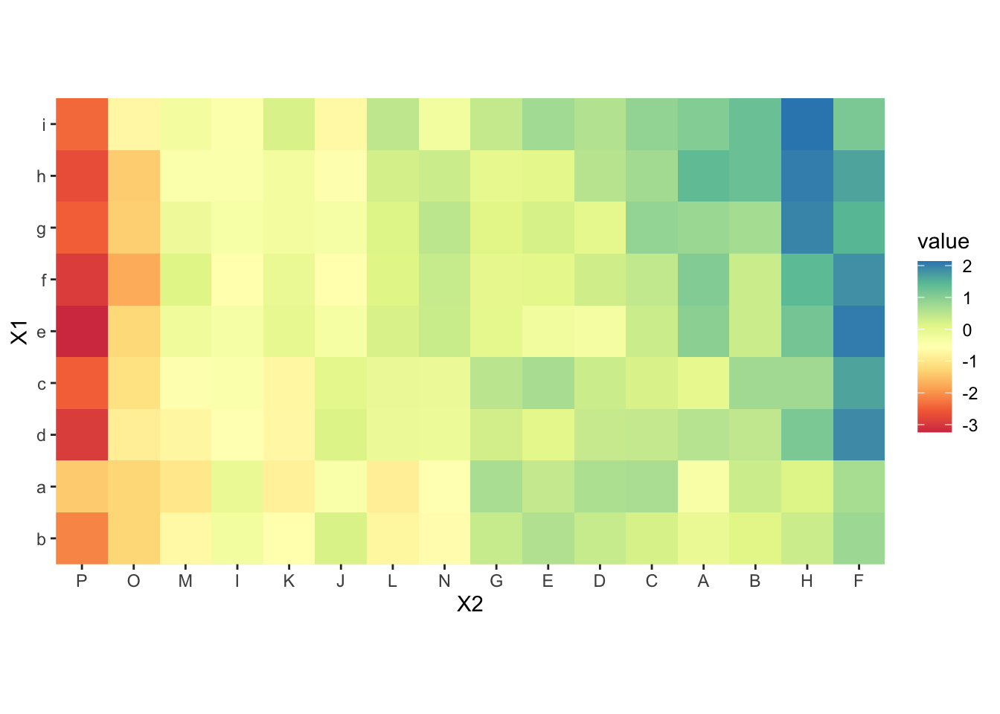
normal
["D53E4F", "F46D43", "FDAE61", "FEE08B", "FFFFBF", "E6F598", "ABDDA4", "66C2A5", "3288BD"]
reversed
["3288BD", "66C2A5", "ABDDA4", "E6F598", "FFFFBF", "FEE08B", "FDAE61", "F46D43", "D53E4F"]viridis <- viridis(9)
plot(viridis)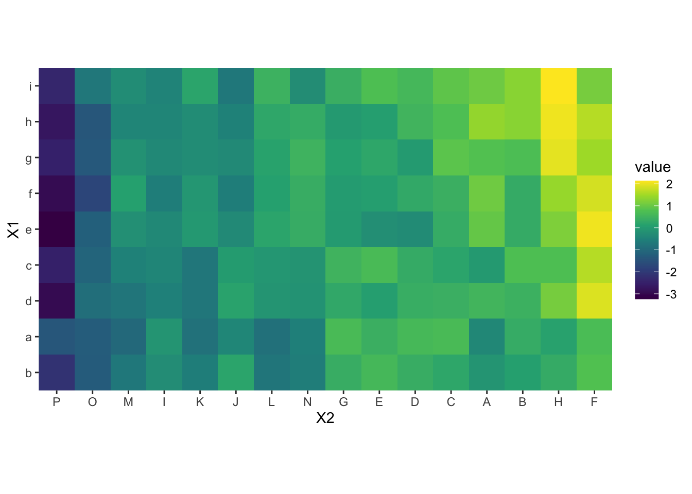
normal
["440154", "472D7B", "3B528B", "2C728E", "21908C", "27AD81", "5DC863", "AADC32", "FDE725"]
reversed
["FDE725", "AADC32", "5DC863", "27AD81", "21908C", "2C728E", "3B528B", "472D7B", "440154"]magma <- viridis(9, option = "magma")
plot(magma)rev(magma)## [1] "#FCFDBFFF" "#FEC287FF" "#FB8861FF" "#E65164FF" "#B63679FF" "#822681FF"
## [7] "#51127CFF" "#1D1147FF" "#000004FF"normal
["000004", "1D1147", "51127C", "822681", "B63679", "E65164", "FB8861", "FEC287", "FCFDBF"]
reversed
["FCFDBF", "FEC287", "FB8861", "E65164", "B63679", "822681", "51127C", "1D1147", "000004"]plasma <- viridis(n = 8, option = "plasma")
plot(plasma)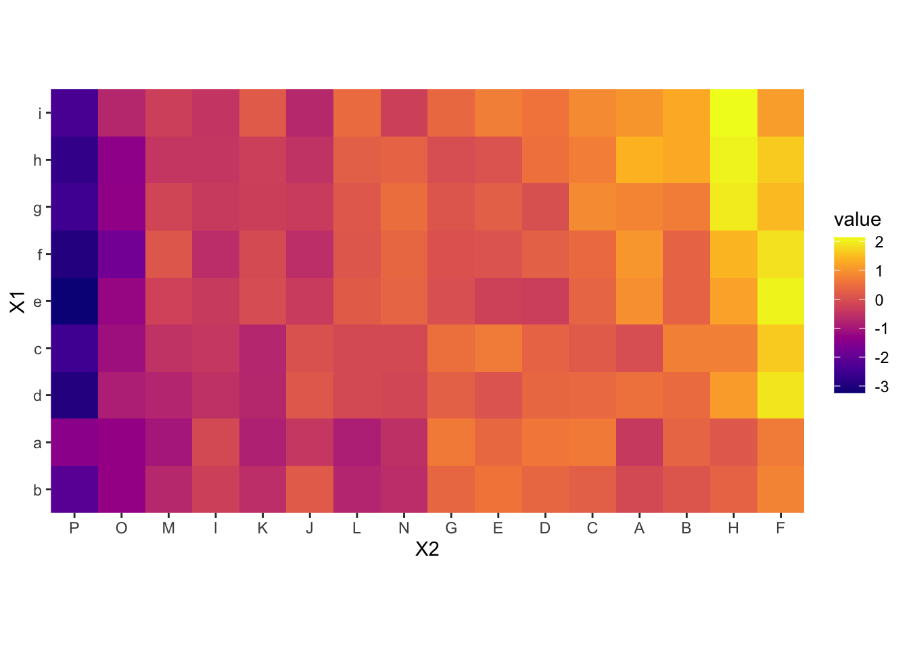
normal
["0D0887", "4C02A1", "7E03A8", "A92395", "CC4678", "E56B5D", "F89441", "FDC328", "F0F921"]
reversed
["F0F921", "FDC328", "F89441", "E56B5D", "CC4678", "A92395", "7E03A8", "4C02A1", "0D0887"]RdBu <- brewer.pal(8, "RdBu")
plot(RdBu)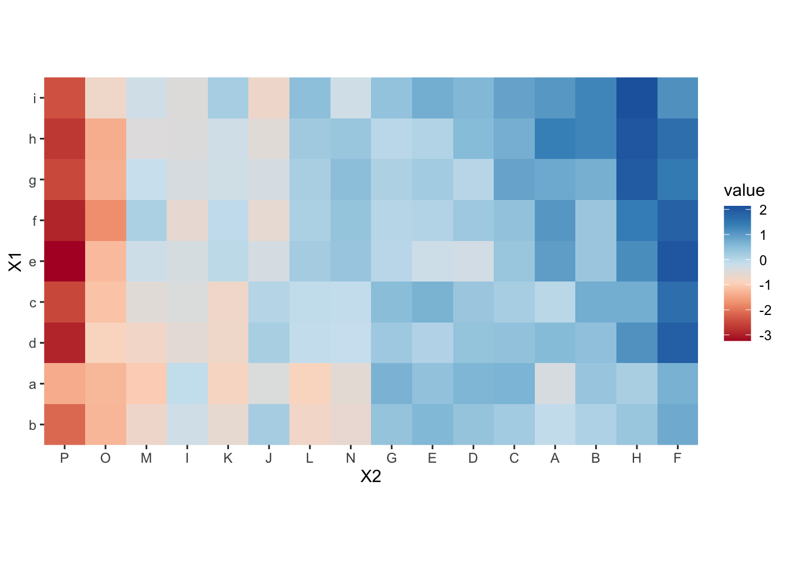
normal
["B2182B", "D6604D","F4A582", "FDDBC7", "D1E5F0", "92C5DE", "4393C3", "2166AC"]
reversed
["2166AC", "4393C3", "92C5DE", "D1E5F0", "FDDBC7", "F4A582", "D6604D", "B2182B"]YlGnBu <- brewer.pal(9, "YlGnBu")
plot(YlGnBu)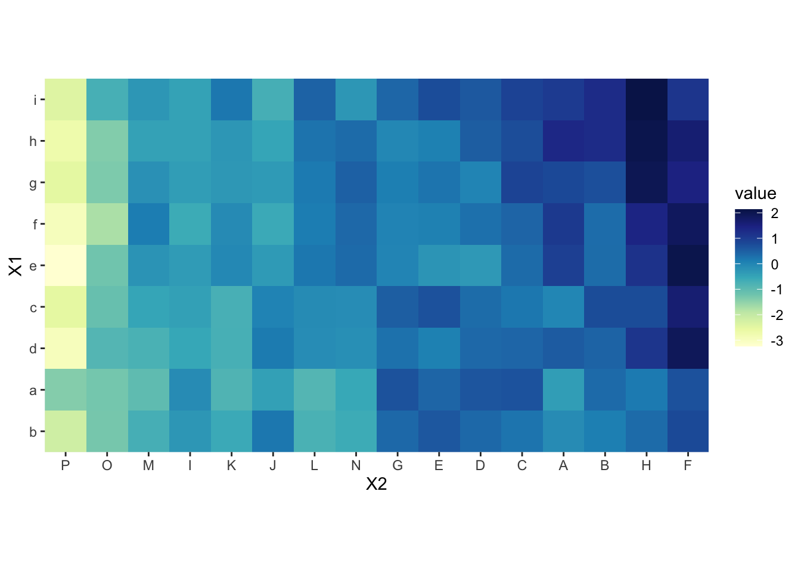
normal
["FFFFD9", "EDF8B1", "C7E9B4", "7FCDBB", "41B6C4", "1D91C0", "225EA8", "253494", "081D58"]
reversed
["081D58", "253494", "225EA8", "1D91C0", "41B6C4", "7FCDBB", "C7E9B4", "EDF8B1", "FFFFD9"]YlGn <- brewer.pal(9, "YlGn")
plot(YlGn)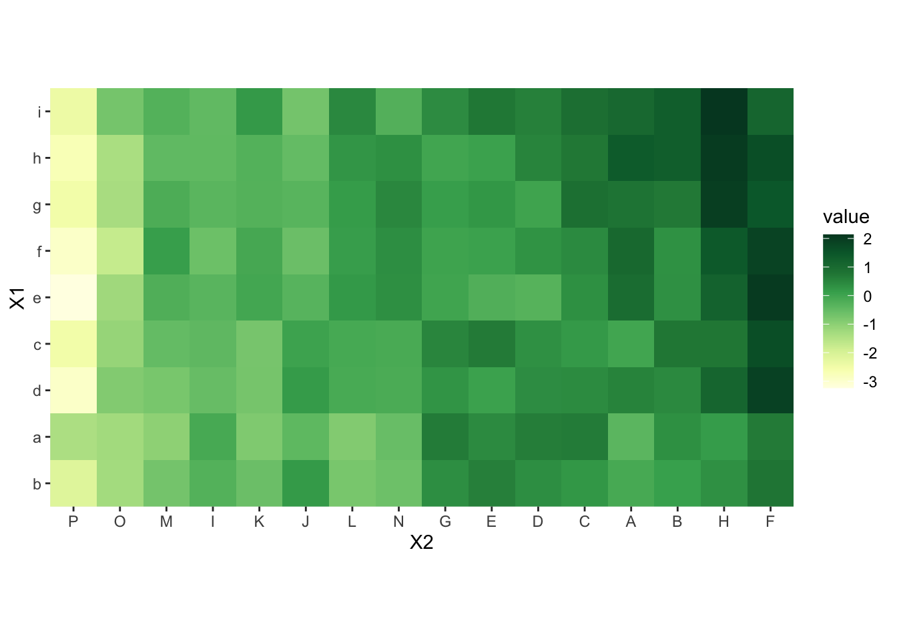
rev(YlGn)## [1] "#004529" "#006837" "#238443" "#41AB5D" "#78C679" "#ADDD8E" "#D9F0A3"
## [8] "#F7FCB9" "#FFFFE5"normal
["FFFFE5", "F7FCB9", "D9F0A3", "ADDD8E", "78C679", "41AB5D", "238443", "006837", "004529"]
reversed
["004529", "006837", "238443", "41AB5D", "78C679", "ADDD8E", "D9F0A3", "F7FCB9", "FFFFE5"]turquiose <- cartography::carto.pal(pal1 = "turquoise.pal", n1 = 9)
plot(turquiose)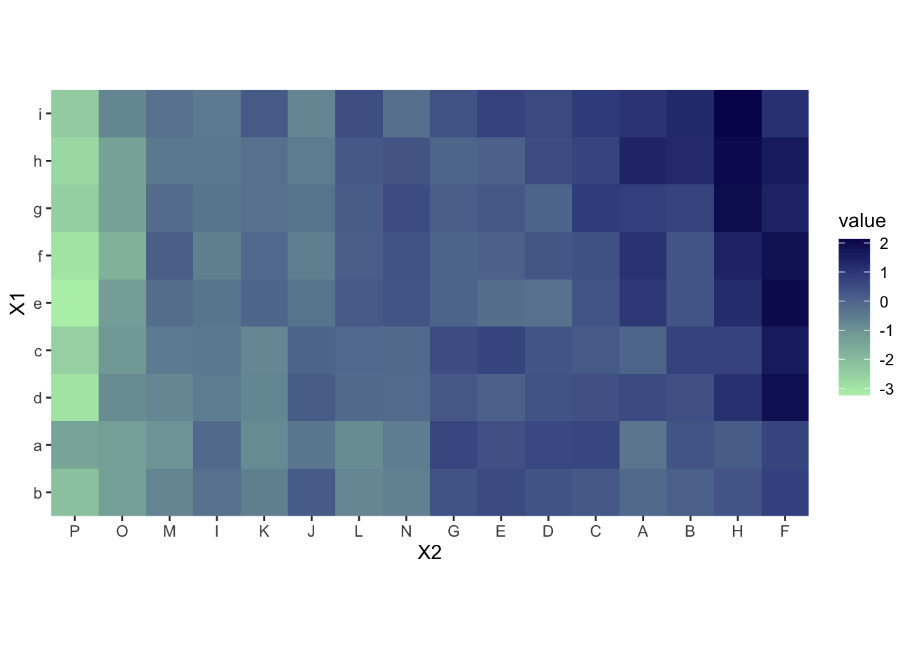
["B6EFB6", "A5D8B1", "95C2AC", "85ACA7", "7190A1", "5B739B", "435490", "253175", "080E5B"]Greens <- brewer.pal(9, "Greens")
plot(Greens)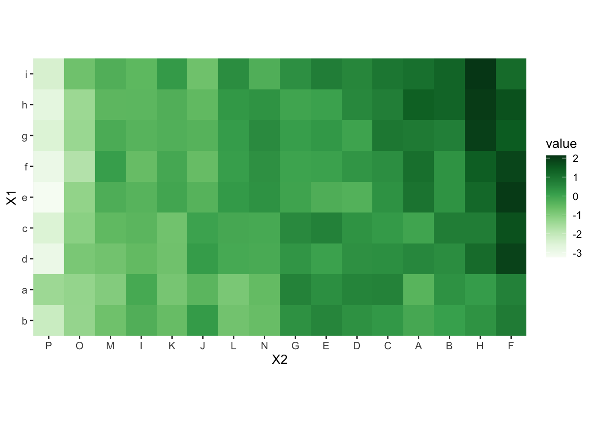
["F7FCF5", "E5F5E0", "C7E9C0", "A1D99B", "74C476", "41AB5D", "238B45", "006D2C", "00441B"]Blues <- brewer.pal(9, "Blues")
plot(Blues)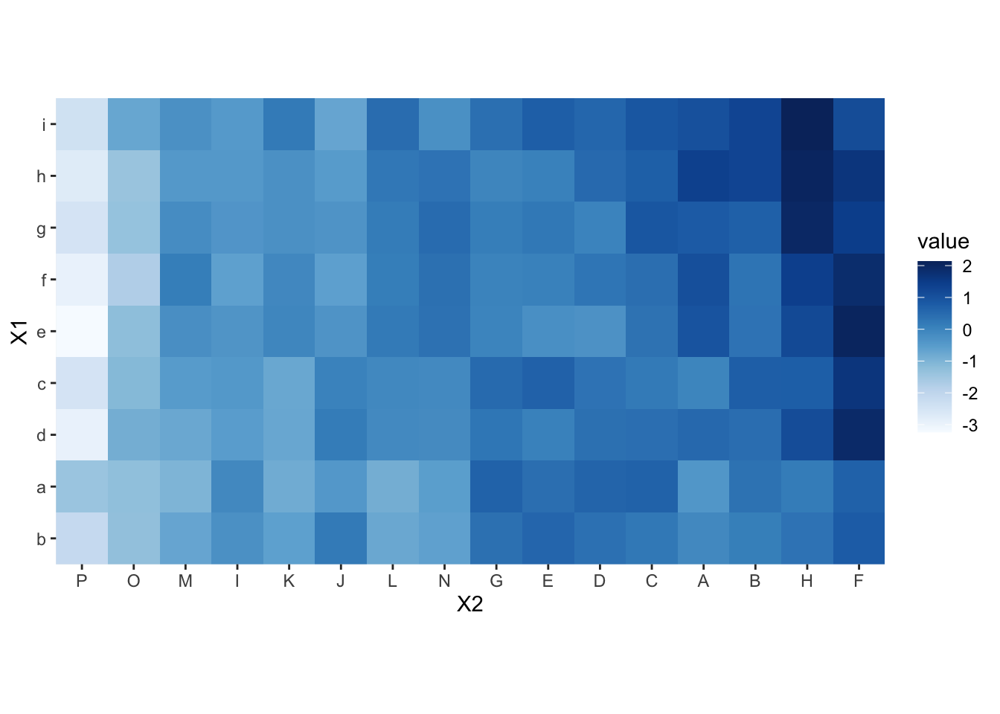
["F7FBFF", "DEEBF7", "C6DBEF", "9ECAE1", "6BAED6", "4292C6", "2171B5", "08519C", "08306B"]Reds <- brewer.pal(9, "Reds")
plot(Reds)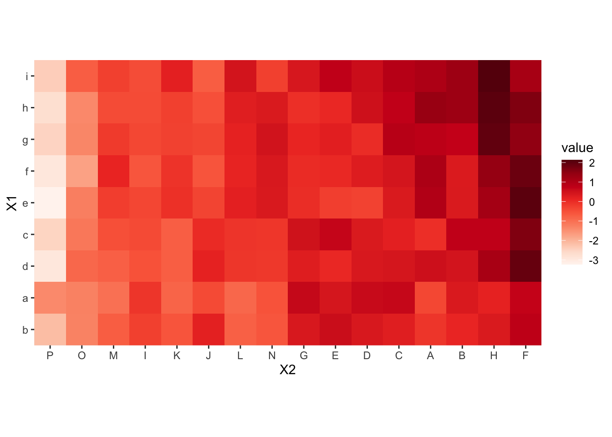
["FFF5F0", "FEE0D2", "FCBBA1", "FC9272", "FB6A4A", "EF3B2C", "CB181D", "A50F15", "67000D"]Orange <- cartography::carto.pal(pal1 = "orange.pal", n1 = 9)
plot(Orange)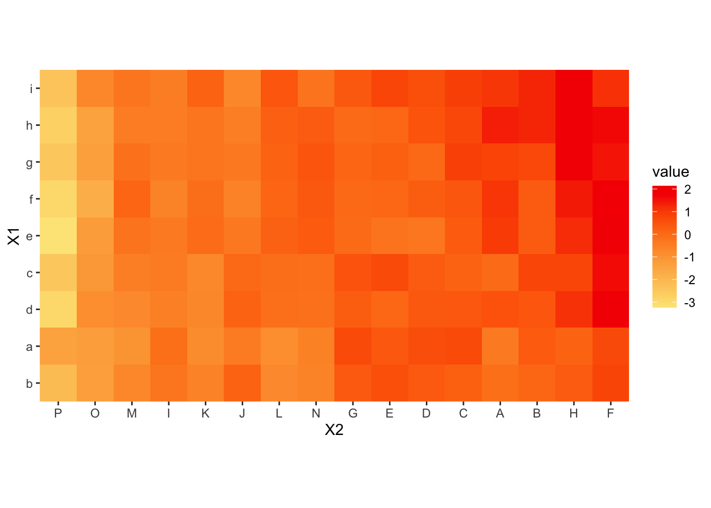
["FDE686", "FDD271", "FDBF5D", "FDAC49", "FE9430", "FE7B15", "FD5C00", "F82E00", "F40000"]Grey <- cartography::carto.pal(pal1 = "grey.pal", n1 = 9)
plot(Grey)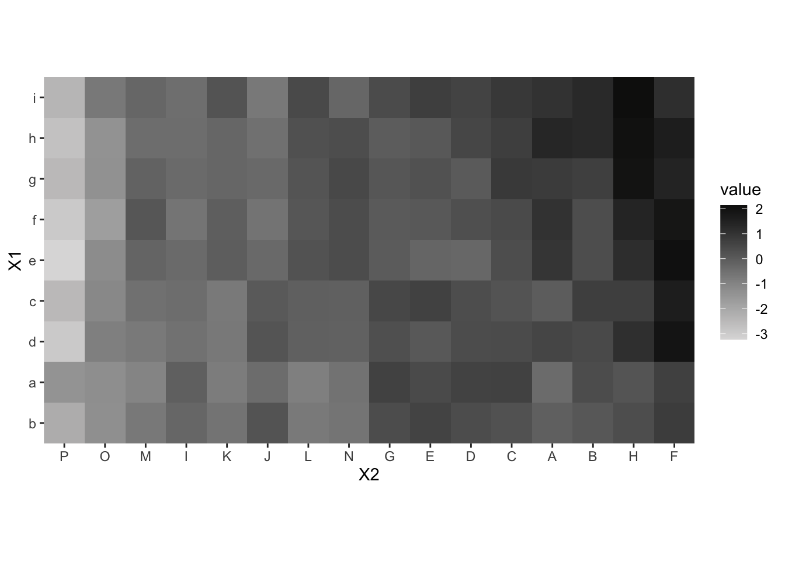
["DDDCDC", "C8C7C7", "B3B3B3", "9E9E9E", "858585", "696969", "4D4D4D" "2E2E2E", "10100F"]zissou <- wes_palette("Zissou1")
plot(zissou)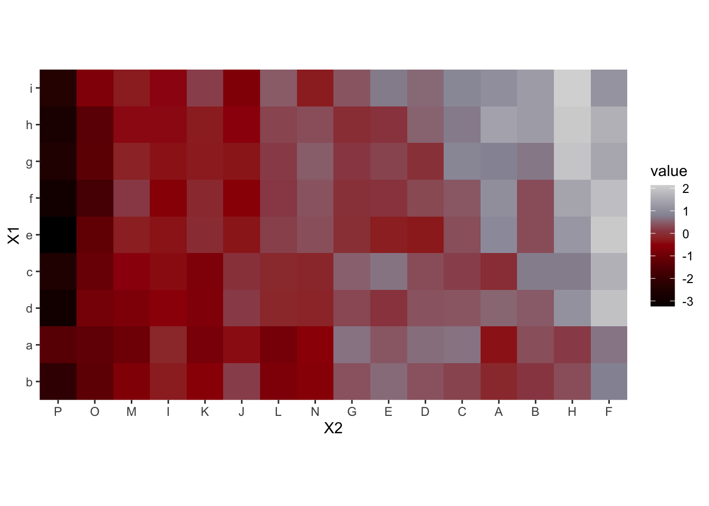
["3B9AB2", "78B7C5", "EBCC2A", "E1AF00", "F21A00"]